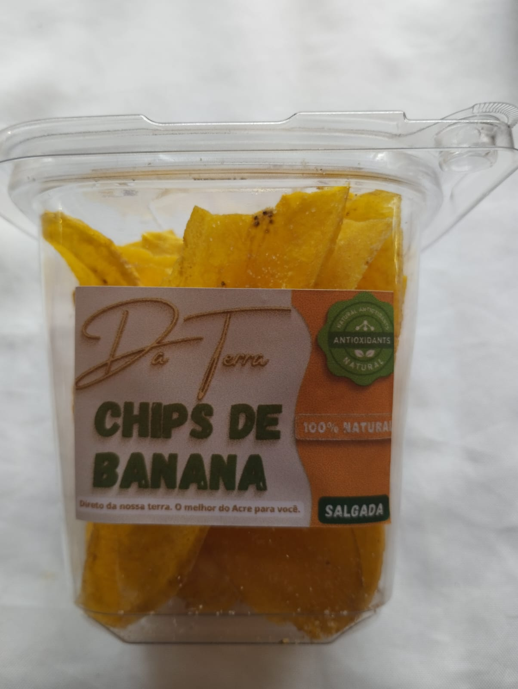
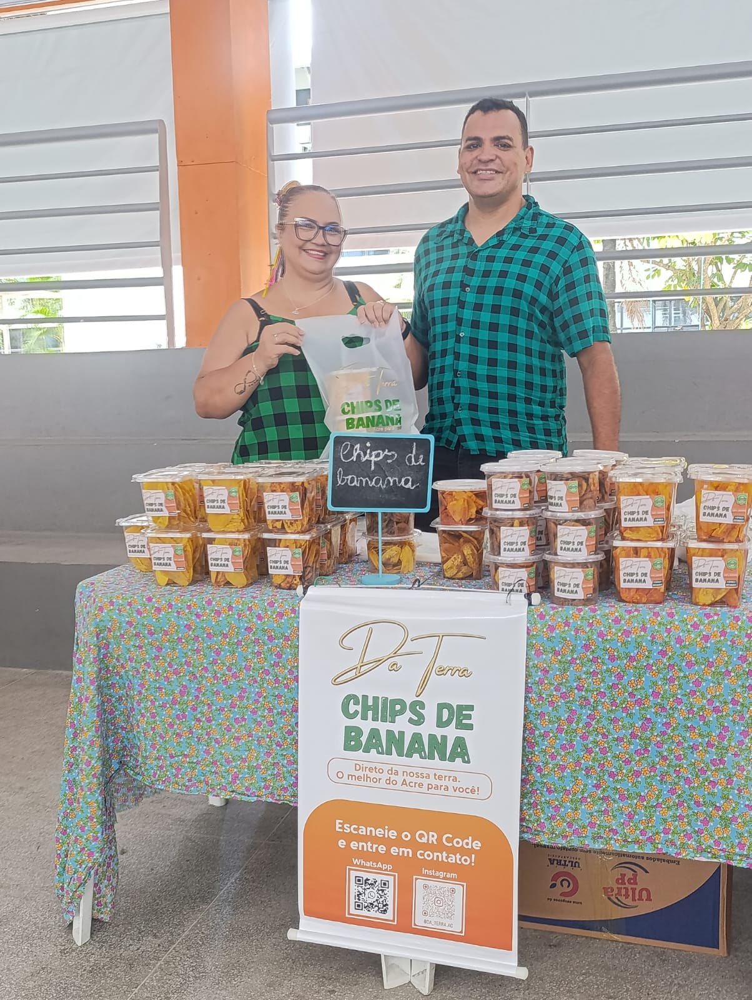
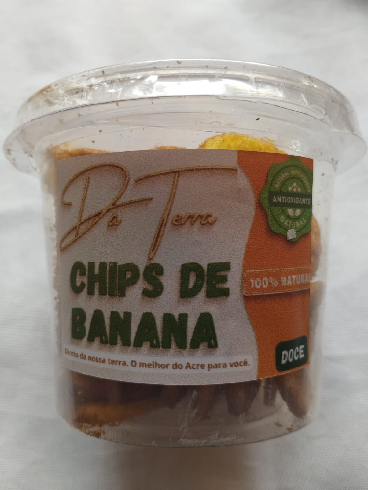
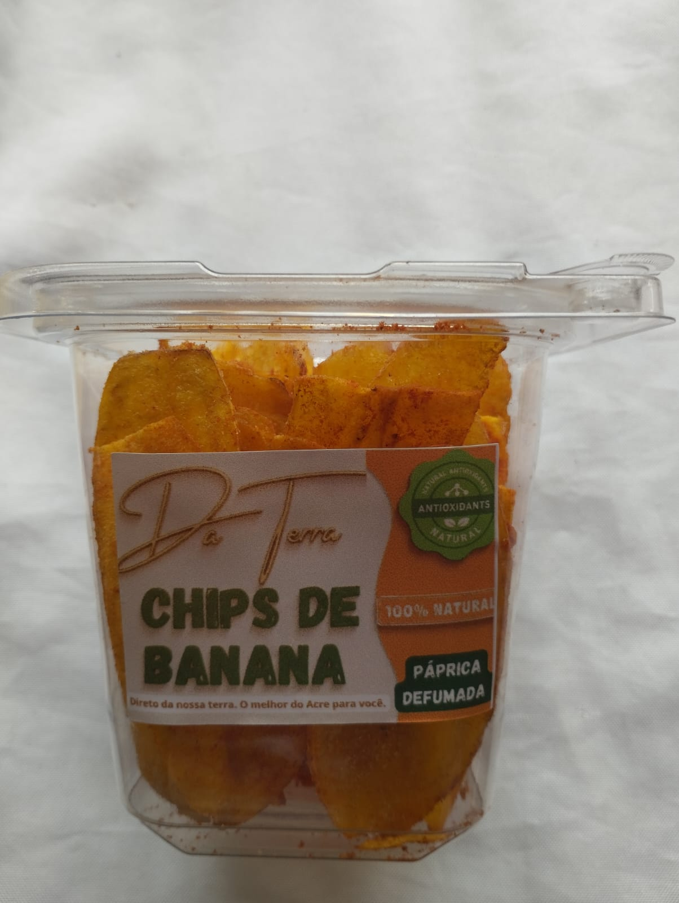
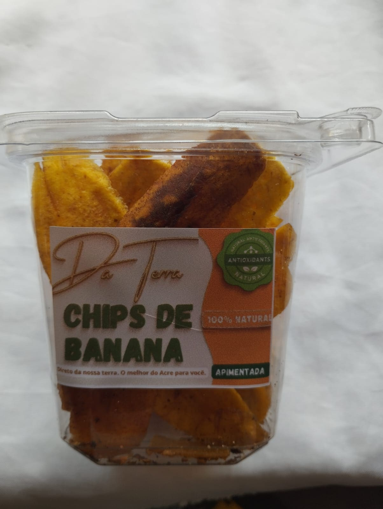
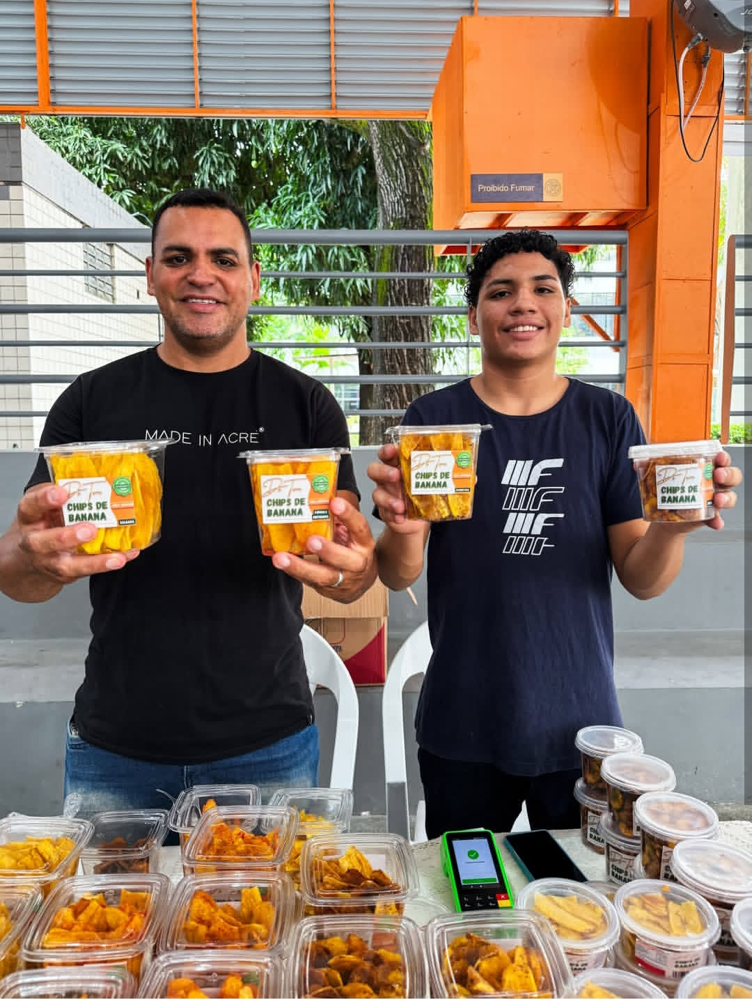
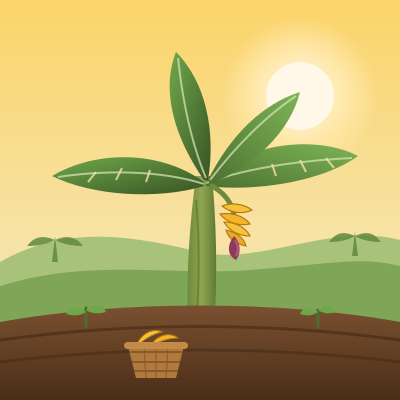
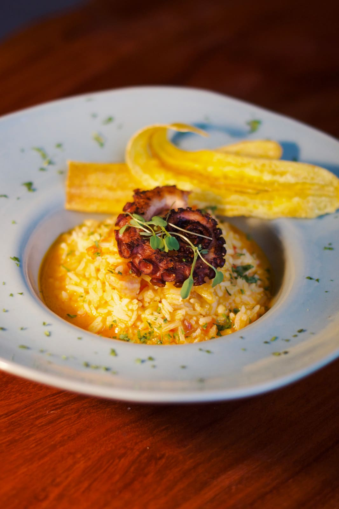
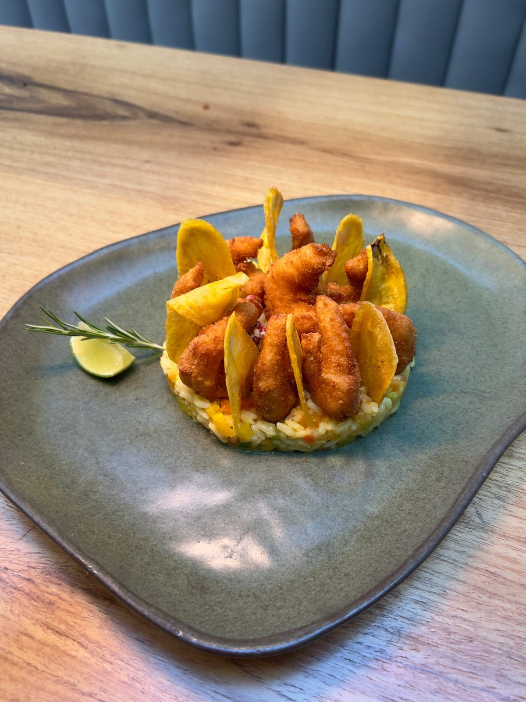
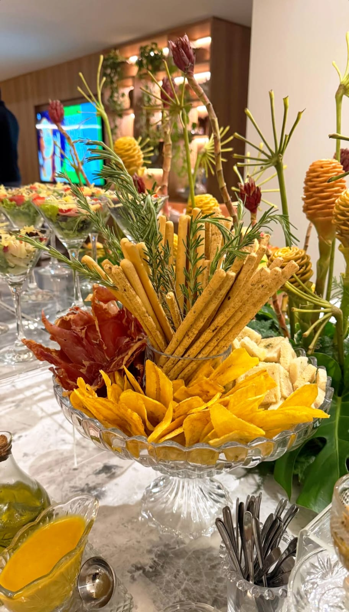

Salgada
A receita clássica: banana verde fatiada fina, frita no ponto certo e temperada com um toque de sal.

Chips de banana artesanais
Feitos com bananas selecionadas de produtores locais, sem conservantes e com o sabor de verdade que só o processo artesanal entrega.

Nossa história
A Da Terra nasceu no Acre, com uma receita de família e a vontade de transformar a banana, fruta abundante e desperdiçada em excesso no campo, em um produto que valorizasse o produtor local e chegasse crocante e saboroso à mesa do consumidor.
Hoje levamos esse sabor pelas feiras de Alagoas, onde construímos nossa base, e também circulamos por feiras itinerantes em outros estados. Já passamos pelo Rio de Janeiro, Bahia e Pernambuco.
Nossa linha
Sabores para todo momento, do lanche da tarde à mesa de festa.
Toque ou clique em um sabor para ver a foto
A receita clássica: banana verde fatiada fina, frita no ponto certo e temperada com um toque de sal.

Bananas maduras, levemente adocicadas. Perfeito para o café da tarde.

Toque defumado e levemente picante da páprica, para quem gosta de um sabor mais marcante.

Um toque de pimenta que transforma o chips clássico em petisco perfeito para acompanhar bebidas.

Do plantio ao pacote
Selecionamos as bananas no ponto ideal de maturação, fatiamos, fritamos em pequenos lotes e embalamos no mesmo dia, preservando crocância e sabor sem depender de conservantes.


Compromisso
Compramos direto de pequenos produtores da região, pagando preço justo e fortalecendo a economia local. Aproveitamos bananas fora do padrão estético de venda in natura, reduzindo desperdício no campo.
Nossas embalagens seguem em evolução constante para reduzir o impacto ambiental, com fornecedores que compartilham desse compromisso.
Onde encontrar
Nossa base é nas feiras de Alagoas, mas também levamos a Da Terra para feiras itinerantes e pontos de venda parceiros.
Todo mês estamos nas feiras da SEMEDE, do HU (Hospital Universitário) e do TRT, em Maceió. Chame no WhatsApp pra saber onde estaremos nesta semana.
De tempos em tempos, levamos a Da Terra para feiras em outros estados. Já estivemos no Rio de Janeiro, Bahia e Pernambuco.
Encontre a Da Terra à venda nestes estabelecimentos parceiros:
Quem usa a Da Terra em pratos assinados:
Toque num ponto de venda pra ver onde fica.
Nos pratos dos nossos parceiros



Fale conosco
Dúvidas, parcerias comerciais ou pedidos de atacado. Nossa equipe responde rapidinho.
Avaliações
Provou e gostou? Deixe sua avaliação no Google. Leva menos de um minuto e ajuda muita gente a conhecer a Da Terra.
Avaliar no Google